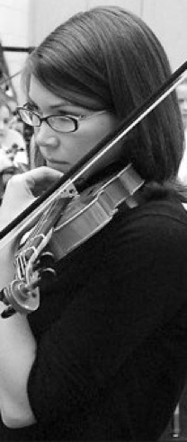

Welcome parents and students!!
Teaching children and adults is a passion for me and I thoroughly love it! The challenge of communicating and engaging each student in just the right way that encourages their progress and success is essential and rewarding. I develop a strong, healthy and mutually respectful relationship that fosters self-guidance and curiosity. While encouraging the joy in one's heart when learning, practicing and performing music, I firmly and supportively insist on proper violin posture and technique at all times.
Enter the learning page here for articles, blogs, videos, and websites for your enrichment! Check back! Updates will happen regularly!
Now accepting viola and violin students in Potomac, MD!
Inquiry for lessons